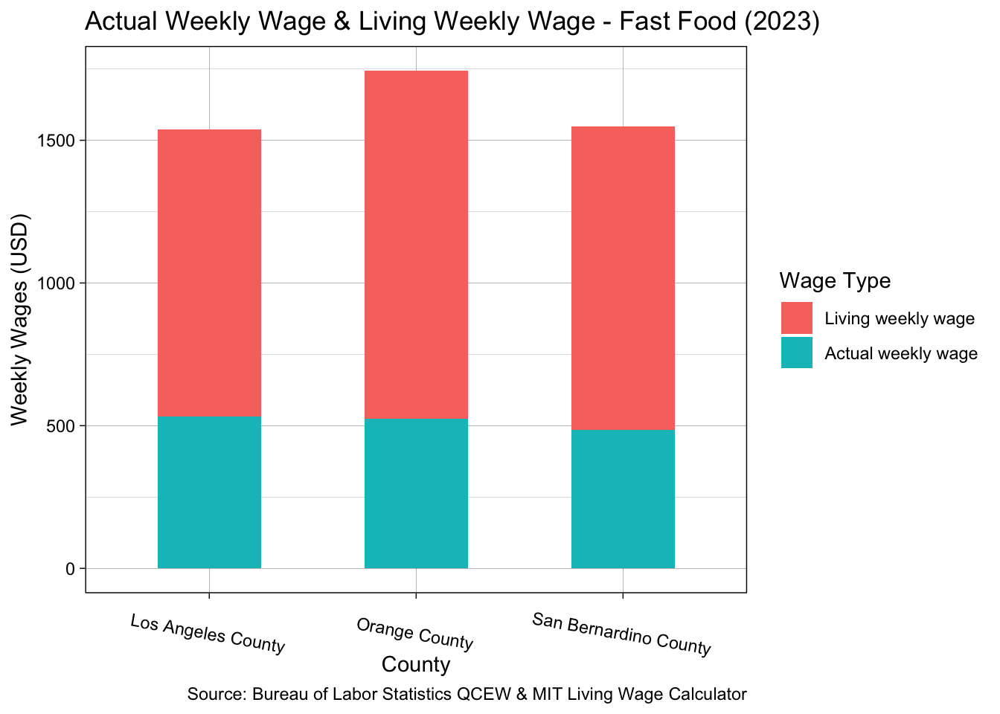
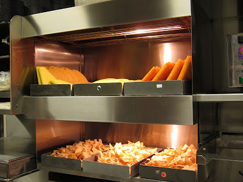
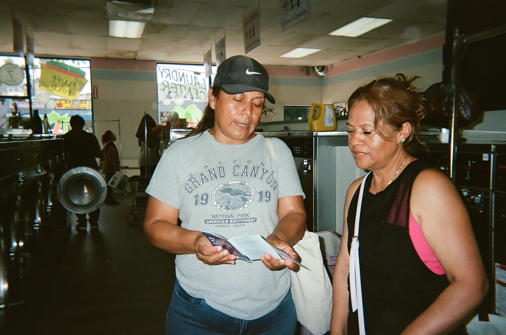

{kind=link}

Indoor Heat and Occupation
Introduction

This research project is carried out in collaboration between UCLA’s Labor Occupational Safety and Health (LOSH) program and the Southern California Coalition for Occupational Safety & Health (SoCalCOSH). This project seeks to uncover the realities and impacts of indoor heat on workers in Southern California using a mixed-methods approach. Through worker interviews paired with data analysis, we analyze the current landscape of implementation and enforcement of the indoor heat standard, position worker voices front and center in research, and provide original analyses of labor and federal OSHA data.
Why indoor heat?
With the onset of climate change, the planet continues to grow hotter and hotter. Heat impacts all facets of life, especially one’s working conditions. While some of the impacts of climate change may be irreversible, there are policies in place to curb the impact of heat, particularly in the workplace. California’s Title 8 regulation, more commonly known as the Indoor Heat Standard, protects all indoor workers, regardless of occupation, from indoor heat exceeding 82° and/ or 87°. The term indoor worker at first presents as vague but this is intentional, as the policy hopes to encompass a broad range of workers in a broad range of industries.
Various industries like warehousing, janitorial, fast food, laundry workers, steel workers, and food processing workers (to name a few) have been majorly impacted by indoor heat on the job. In other words, these are some of the industries that can benefit the most from the indoor heat standard’s protections.
Southern California residents are familiar with the dangers of being out in the heat. We avoid it. We seek shade. We see construction workers and gardeners working in the heat and we feel for them. Alongside many local governments and organizations, the state of California recognizes the impacts of outdoor heat, going as far as codifying labor standards in 2006 that protect outdoor employees, like agriculture and construction workers. Of course, the 2006 Maria Isabel Vasquez Jimenez outdoor heat illness standard was only passed after many lives were lost to outdoor heat. While the impacts of outdoor heat are well documented, what about the impacts of indoor heat?
The impacts of indoor heat: the fast food industry
It is a warm Sunday in Anaheim, CA and people are looking for an affordable and fast meal. Why not Taco Bell? Jeanpaul, a shift lead at an Anaheim Taco Bell, finds himself fulfilling orders with his four person crew that is already short-staffed for the day. Work grows busier, which is typical– this Taco Bell crew sells upwards of $12,000- $18,000 of food daily. At an average of $15,000 in sales a day, the crew find themselves preparing and selling around $2,143 worth of food per hour. Orders are flooding in, and with a central air conditioning that has been broken for a year and six months, the kitchen heats up quickly. Amidst the rush, Jeanpaul’s co-worker calls him over.
“I ask ‘what happened?’ … She’s pale. She stood against the wall and POOM. She fell. But when she fell I grabbed her and I didn’t care about anything anymore … Life comes first before work for me.”
…
“Honestly it was suffocating that day, my head even hurt. I felt like I was going to faint, but I got out. I couldn’t take it anymore. I said no, I’m not going to be here, but there are a lot of people who did [stay]. They were 49/50 years old, so it hits them harder. But you do feel suffocated. You do feel bad. You don’t feel comfortable working anymore.”

In the sweltering kitchen heat, Jeanpaul’s co-worker fainted in front of him. Jeanpaul himself had a headache. That same kitchen reached temperatures of 104° on certain days, a fact only known because a worker carried a small thermometer displaying the temperature. Evidently, there were no practices in place informing employees of workplace temperatures, which would enable them to take necessary precautions, such as breaks and hydrating, to prevent heat related emergencies. Additionally, the employer had not communicated any clear emergency procedures that would prepare the Taco Bell crew to handle serious health incidents, such as fainting from heat stress.
The fast food industry is notorious for being a poverty employer, that is, it employs a larger share of people in poverty than any other industry. Daniel Flaming outlines the combined effect of low wages, insufficient hours, and employee turnover in maintaining many fast food workers in an economically precarious situation, or rather, poverty employment. In the most extreme cases, this poverty employment has led to fast food workers making up 5.9 percent of California’s homeless population in 2020.
Despite being a major employer in the state of California, fast food work does not provide a living wage and further exposes workers to extreme, unsafe temperatures. Figure 1 below demonstrates the disparity between living wages and actual wages in the fast food industry. In Los Angeles, Orange, and San Bernardino County, workers are earning an average weekly wage of $532, $524, $484, respectively. This pales in comparison to an average living wage which in all three counties is more than double what fast food workers were earning on average in 2023. According to MIT’s living wage calculator the average living wage for a single person working full time (40 hours/ week) in Los Angeles, Orange, and San Bernardino County is $26.63, $30.48, and $25.17, respectively. Due to a lack of average hourly wage data from the Bureau of Labor Statistics, the comparison between living wages and actual wages is made at the weekly level (40 hours/ week) where average wage data is available.
Still navigating the situation, Jeanpaul calls his manager for help but she refuses to believe in the gravity of the situation. Instead she insists que se hasta haciendo. She is faking it, the manager insists. The manager goes as far as saying Jeanpaul cannot take her to the hospital (as he hoped to) and he can only leave Taco Bell if the bathroom or plumbing is broken. After the incident, neither a supervisor nor a manager decided to show up that day. On Monday, the following day, Jeanpaul receives a call that he is being given a formal warning for five minutes of overtime that he worked but he suspects the meeting’s real purpose is to fire him. Reflecting on this he says:
“But when the heat [incident] happened, it was like we said, ‘Right now. This week we have to go on strike.’ Their plan was to fire me, and I told them [SEIU XXX], ‘Aye, they’re going to fire me on Tuesday. Speed up the strike because they’re going to fire me on Tuesday.’”
Citing wage theft, psychological mistreatment, discrimination toward older workers, and the fainting incident as the final straw, these workers saw strength in numbers, walking out in protest of both unjust working conditions and extreme indoor temperatures. They have since filed a formal Cal/OSHA complaint. Empowered by collective action, they remain steadfast in their commitment to demand dignified workplaces.
Heat is misunderstood: understanding the current heat index*
{kind=link}
This kitchen’s 104° temperature indicates the ambient temperature at that moment, however, the heat stress one feels at any given moment is influenced by both ambient temperature and humidity. With a temperature of a 104* and a humidity level of 14%, the Taco Bell kitchen felt more like 100° instead of 104° due to the low humidity levels. However, apart from being uncomfortable working in 100° weather for a prolonged time can lead to possible sunstroke, heat cramps, or heat exhaustion, among several other health impacts. These thresholds are in the image above.
Indoor heat is a silent killer. When the body is no longer able to cool itself under extreme temperatures, one can experience a plethora of health issues including dizziness, headaches, nosebleeds, heat exhaustion, and heat stroke. Under extreme heat the body will work harder to cool itself down, stressing the heart and kidneys which can in turn exacerbate underlying chronic illnesses such as cardiovascular, mental, respiratory and diabetes related conditions (WHO 2024). In other words, extreme heat disproportionately impacts the elderly or those with underlying health conditions. These impacts are further exacerbated when one has to work a long, strenuous work shift under extreme temperatures.
Heat remains widely misunderstood, making it challenging to address its full impacts. Below is an overview of federal understandings of the heat index, new understandings of the heat index, and a straightforward explanation of how to interpret the heat index and heat stress.
The Current and Extended Heat Index
The dominant understanding of heat revolves around the National Weather Service’s heat index developed by R.G. Steadman (1979) that combines ambient temperature (wet bulb temperature) and relative humidity to produce a reading of what the temperature really feels for the human body. By extension, this measure captures the heat stress a body may feel at any given temperature. While the heat index has successfully captured what temperatures really feel like, climate change has flipped this index on its head. Specifically, with the increase of extreme temperatures and humidity due to climate change, we are seeing the inability of the index to accurately capture what temperatures feel like on some of the hottest heat waves.
{kind=link}
Generally, Steadman’s model captures the heat index successfully for most weather conditions, however, the researchers point to the fact that for relative humidity levels at 80%, the heat index never defined values for temperatures below 59° or above 88° (Lu & Romps, 2022). Already in 2024, Southern California has seen several summer heat waves with temperatures above 90° and even 100°. While humidity outdoors in Southern California may not be an issue do the rather dry climate, To update the heat index to the ongoing extreme weather episodes experienced today, the researchers provide an updated heat index calculator as well as a corrected NWS chart as seen in the figure below.
{kind=link}
In their 2024 study, Romps and Lu collected original weather data from Texas during the summer months, further highlighting combined effects of rising temperatures and humidity on human physiological stress. Their findings show that climate change has raised the heat index in Texas by an average of 8–11°F during June through August. Consequently, the current heat index is underestimating these values precisely because heat index values were never defined for extreme weather patterns of high humididty and high temperatures, such as those seen in a Texas summer.
This dangerous mix of high humidity and extreme heat significantly increases health risks, especially for workers, elderly people, and those with pre-existing conditions. While outdoor workers, such as those in construction, are known to be vulnerable to heat-related incidents, indoor workplaces can also become treacherous. Without adequate cooling, indoor workplaces can trap heat, creating conditions that, while less visible, are equally threatening. Specifically, indoor workplaces without proper ventilation, such as air conditioning, lack the presence of wind that normally functions as a cooling agent in outdoor heat. This can lead to dangerous combinations of high temperature and high humidity, precisely the conditions in which heat stress is much higher than what the current heat index reports.
Why is humidity important?
Higher humidity reduces the body’s ability to cool itself through sweating, leading to increased heat stress. This poses significant health risks, as the body is pushed closer to physiological limits where hyperthermia (dangerous overheating) can occur. As humidity and temperatures rise, so does the risk of heat-related illnesses. Findings suggest that even small increases in temperature can drastically increase the body’s stress under high humidity, leading to conditions like heat stroke.
Indoor Heat in the Warehouse Industry
{kind=link}
Southern California’s logistics and warehouse industry is a vital hub for goods movement, employing over XXXXX workers across the region. The industry forms the backbone of the Southern California logistics hub (and the U.S. supply chain), but workers face a plethora of occupational and health challenges due to sprawling warehouse with limited ventilation and intense workloads. Many warehouses lack effective cooling systems, leading to indoor temperatures that can reach triple digits on hot days. As a result, workers report facing health risks, often with minimal protections in place to mitigate the effects of prolonged heat exposure.
Victor, a veteran warehouse worker, is currently employed at a large facility in the Inland Empire that sorts wholesale goods for major retail stores like Sam’s Club and Costco. He describes the immense warehouse where 200-300 people are on the clock at one time, a sight all too common in the Inland Empire region. He’s up at 4 am for his morning shift, but even in the early hours, the impacts of the warehousing & logistics industry in the region are palpable to him.
“There is a lot of traffic, all the containers. So many containers bring a lot of traffic. In the warehouses, everywhere, from very early. When I go in at 4 in the morning the freeway is already full.”
For Victor, it’s evident that the warehousing industry dramatically impacts the region he calls home. With over 20 years as a warehouse worker, he understands these connections deeply and intuitively. Consequently, he has long been part of the fight to change the industry and fight for improved protections and rights for warehouse workers. As he reflects on the newly passed indoor heat standard, he says:
“We should have gone through it [the heat standard] a long time ago because I practically lived through it myself, working in the warehouses, there was no insulation, there was no fan, there was no water, so that’s why we have to do something.”
{kind=link}
Even with protective measures, such as the large fans and water stations at Victor’s workplace, workers constantly face threats to their health. During the Inland Empire’s recent DATE heatwave, Victor suddenly felt blood at his nose while working, an unmistakable sign that indoor temperatures are having serious impacts to workers’ health and safety. Just last year, three people fainted in his workplace due to extreme heat.
The indoor heat standard can help prevent this? paragraph on that? or paragraph on the common complaint of fans
In Riverside, systemic impacts like extreme heat, climate change, and inequality converge, amplifying the hardships faced by workers. Workers see firsthand how these forces intertwine, impacting his neighborhood with rising temperatures (indoor and outdoor), pollution, traffic congestion, and frequent wildfires.
“They didn’t take it too seriously but practically the heat is increasing more... As more traffic passes by, instead of seeing more green areas we see more warehouses and warehouses, all of this heats up the environment more and especially when it is hot there are more fires. The climate gets worse, the air, everything is contaminated, everything like that.” - Victor Ramirez
Warehouse workers share similarities in their outlooks and experiences, offering an opportunity and space for strong currents of worker solidarity, organization, and unionization.
Describe the container? describe the importance of containerization in the logistics industry. inland shift and what impact it has had to the region.
Karen, a Coachella resident working at a major San Bernardino warehouse, finds herself with a new perspective on warehouse work. From office work to being a warehouse worker she is happy with the transition and is recently becoming more active in advocating for herself and her fellow workers. Karen works in the non-con, or non-conveyable, department, where she handles packages that are too large or heavy for a conveyor belt. Treadmills,
Karen recognizes the importance of air conditioning in these massive warehouses. Specifically, during the recent DATE Inland Empire heat wave, she notes that the air conditioning maintained the warehouse around 30°F lower than the 115°F temperatures outside, with the indoor temperature hovering around 85°-87°F. Even with the commercial air conditioning, the indoor temperature, at times, still reached the heat standard’s threshold requiring active intervention to lower the temperature.
Of course, working in a massive air-conditioned warehouse is not the norm in the logistics capital of the US. Despite the different working conditions warehouse workers in this region have shared experiences and opportunities for strong unity and solidarity.
Worker Struggles, Persistence, and Advocacy
……

….